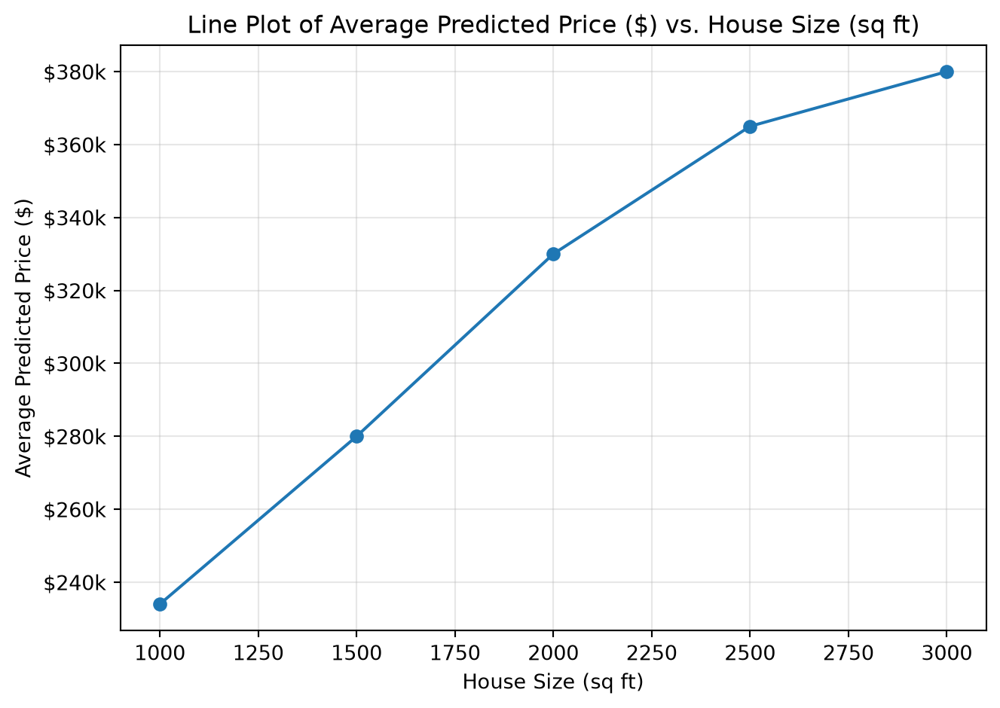
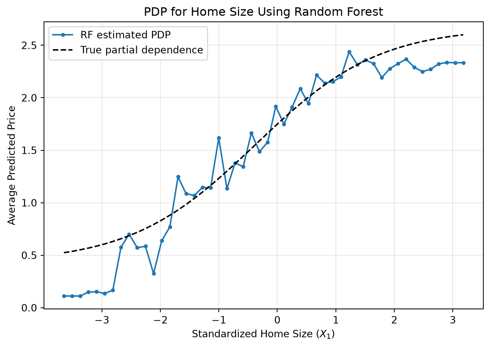

Book Titie: Interpretable Machine Learning: A Guide for Making Black Box Models Explainable
Author: Christoph Molnar
The Interpretable Machine Learning: A Guide for Making Black Box Models Explainable by Christoph Molnar (Molnar 2025) introduces the concept of the Partial Dependence Plot (PDP)
4.1 The Motivating Idea of PDP
A Partial Dependence Plot (PDP) is a type of Ceteris Paribus (CP) Plot which is used to visualize how changes in one feature can effect changes in the target variable in a machine learning model. A PDP is the average of all CP curves of one dataset.
CP asks: What happens to this person’s prediction if I change X?
PDP asks: On average, how does X affect the model’s prediction?
The Partial Dependence Plot (PDP) visualizes the marginal effect of one feature on the predicted outcome of a machine learning model. In other words, it visualizes the change in the target variable when one select feature changes while all other features are kept constant.
A PDP can therefore, reveal the relationship between the target variable and the specific feature.
For example, for a linear regression model, the relationship between the rpedictor variable and a specific feature variable might have a linear relationship which can be visualized with a PDP.
NoteBuilding Intuition - Predicting Housing Price Example
Assume we have data about houses and we want a machine learning model to predict housing prices using the features size, number of bedrooms, and age.
House
Size
Bedrooms
Age
Actual Price
A
1,500 sq ft
3
10
$300k
B
2,000 sq ft
4
5
$400k
C
1,200 sq ft
2
30
$250k
…
…
…
…
…
Further suppose we are interested in the effect of home size on housing prices. We want to determine for our machine-learning model, what happens to predicted house price as house size increases. However, in practice, many features can impact the predicted price of a house rather than size alone.
If we used models such as random forest, we are not prvoided with a clean equation that provides intuitive insight about the relationship between home size and predicted house price. The model would instead involve a complicated collection of decision trees.
An exanple of an intuitive and clean equation could be: Price=100(Size)+20(Bedrooms)−5(Age)
Therefore, the PDP is used to detmerine what would the model predict on average if we forced all features in our dataset to have the same value of the chosen feature. This allows us to have a better idea into how the model behaves. In this example, we can determine what happens to predicted house price as house size increases on average according to our machine-learning model.
Suppose we have 5 houses and we want to find the PDP for home size
House
Size
Bedrooms
Age
A
1,000
2
30
B
1,500
3
10
C
2,000
4
5
D
2,500
4
15
E
3,000
5
2
Let’s say Size=1,000. Therefore, we assume every house has a size of 1,000 sq ft.
House
Size
Bedrooms
Age
A
1,000
2
30
B
1,000
3
10
C
1,000
4
5
D
1,000
4
15
E
1,000
5
2
These five observations are ran through our trained model where let’s say the model predicts:
House
Predicted Price
A
$180k
B
$220k
C
$240k
D
$250k
E
$280k
Taking the average those predictions we yield:
\[ \frac{180+220+240+250+280}{5}=234 \]
So our PDP value when home size is 1,000 sq ft is $234,000
This process is repreated for all avaiable home sizes in the dataset such as we yield the following:
Size
Average Prediction
1,000
$234k
1,500
$280k
2,000
$330k
2,500
$365k
3,000
$380k
The resulting relationship for home size can thus be visualized as:
Code
import matplotlib.pyplot as pltfrom matplotlib.ticker import FuncFormattersize = [1000, 1500, 2000, 2500, 3000]average_prediction = [234000, 280000, 330000, 365000, 380000]plt.figure(figsize=(7, 5))plt.plot(size, average_prediction, marker="o")plt.xlabel("House Size (sq ft)")plt.ylabel("Average Predicted Price ($)")plt.title("Line Plot of Average Predicted Price ($) vs. House Size (sq ft)")plt.gca().yaxis.set_major_formatter( FuncFormatter(lambda x, pos: f"${x/1000:.0f}k"))plt.grid(True, alpha=0.3)plt.tight_layout()plt.show()

Figure 4.1: Example line plot visualizing a roughly linear relationship between home size and average predicted house price. Note: This is NOT the PDP since these five observations are not calculated from a machine learning model but are rather made-up house size and predicted house price pairs.
4.2 How to Implement, Use, & Interpret the PDP
NoteMathematical Derivation
The partial dependence function is defined as:
\[
\hat{f}(\mathbf{x}_S) =
\mathbb{E}_{\mathbf{X}_C}
\left[
\hat{f}(\mathbf{x}_S, \mathbf{X}_C)
\right]
\] For a finite dataset containing \(n\) observations, the partial dependence function is defined as:
\(\mathbf{x}_S\) represents the feature or features of interested in / features to be plotted. For the housing example, if we want to understand how house size affects predicted house price, then \(\mathbf{x}_S\) could represent size in square feet.
\(\mathbf{X}_C\) represents all other features in the model / features not to be plotted. For the housing example, this includes the number of bedrooms, home age, etc.
Set S contain the feature(s) which we want to know the effect on the prediction.
\(\hat{f}(\mathbf{x}_S, \mathbf{X}_C)\) means that we give the model a particular value of the feature we are studying while allowing the other features to vary.
\(\hat{f}\) is our already-trained machine learning model. It takes feature values as input and produces a prediction.
\(\mathbb{E}_{\mathbf{X}_C}[\cdot]\) means take the average over the distribution of the other features.
For each observation \(i\):
Set the feature of interest to the same value \(\mathbf{x}_S\).
Keep that observation’s other feature values unchanged, represented by \(\mathbf{x}^{(i)}_C\).
Give this modified observation to the trained model.
Record the resulting prediction \(\hat{f}(\mathbf{x}_S,\mathbf{x}^{(i)}_C)\).
Repeat this for all \(n\) observations. 8 Average all of the predictions.
4.3 Modeling Applications
NoteData Generating Process
To illustrate the Random Forest and Linear Regression with Splines models, data is simulated from the following model:
For the housing example, the features are mapped as follows:
\(X_1\) — standardized home size (the feature of interest for the PDP)
\(X_2\) — standardized home age
\(X_3\) — binary renovated indicator
\(Y\) — home price
import numpy as npimport pandas as pdrng = np.random.default_rng(42)n =2000def sigmoid(x):return1/ (1+ np.exp(-x))# X1: standardized home size, X2: home age, X3: renovated (0/1)size_std = rng.normal(0, 1, n)age_std = rng.normal(0, 1, n)renovated = rng.binomial(1, 0.4, n)# Conditional mean per the specified DGPmean_price = ( np.sqrt(5) * sigmoid(size_std + renovated)+ np.sqrt(5) * sigmoid(age_std) * renovated)# V[Y|X] = 1 is the unit-variance noiseprice = mean_price + rng.normal(0, 1, n)df = pd.DataFrame({"size_std": size_std,"age_std": age_std,"renovated": renovated,"price": price})X = df[["size_std", "age_std", "renovated"]]y = df["price"]df.head()
size_std
age_std
renovated
price
0
0.304717
-0.451951
0
1.982447
1
-1.039984
-0.665878
0
-1.224207
2
0.750451
0.434010
0
1.945678
3
0.940565
0.251854
1
3.006563
4
-1.951035
-1.404792
1
1.193555
Code
# This function estimates the Partial Dependence Plot (PDP) for ONE feature, using ANY already-trained model (random forest, spline regression, etc.). It follows the exact recipe from the PDP definition:# 1. Pick a value for the feature of interest (e.g., size = 0.5)# 2. Force EVERY house in the dataset to have that size, but leave their other features (age, renovated) exactly as they really are# 3. Ask the model to predict price for all of these "edited" houses# 4. Average all of those predictions -> this average is one point on the PDP curve# 5. Repeat for many different size values to trace out the curvedef compute_pdp(model, X, feature, n_grid=50):# Build a sequence of values to test for our feature of interest and span from its smallest to largest observed value in the data# with n_grid evenly spaced points (default: 50 points) grid = np.linspace(X[feature].min(), X[feature].max(), n_grid)# Make a copy of the dataset so we don't overwrite the real data X_temp = X.copy()# This will hold the average prediction for each grid value pdp_vals = np.empty(n_grid)# Loop over every candidate value of the feature (every candidate size value)for i, val inenumerate(grid):# overwrite every row's feature value with this single value. So if val = 0.5, every house in X_temp now has size_std = 0.5, but keeps its own real values for other features X_temp[feature] = val# get a prediction for every (edited) house, then average all of those predictions into one number pdp_vals[i] = model.predict(X_temp).mean()# Return the grid of feature values and their matching average predictions. These are the (x, y) points to plot as the PDPreturn grid, pdp_vals
Code
# compute_pdp() above estimates the PDP using a select model's predictions but because we made up this data ourselves, we actually know the real mathematical formula that generated it using: E[Y|X] = sqrt(5)*sigmoid(X1 + X3) + sqrt(5)*sigmoid(X2)*X3# So instead of relying on a trained model's (imperfect) guesses, we can plug real formula directly and get the true partial dependence. This gives us a benchmark to compare our models against. If a model's PDP is close to this true curve, that's a sign the model is doing a good job at learning how size affects price.def true_pdp_size(grid, age_std, renovated):# This will hold the true average outcome for each size value we test vals = np.empty(len(grid))# Loop over every candidate size value (same idea as compute_pdp)for i, s inenumerate(grid):# Plug this fixed size value s into the real formula, while using every house's actual age and renovation values (this mirrors "keep the other features as they really are" from the PDP definition, just using the true formula instead of a trained model) contrib = ( np.sqrt(5) * sigmoid(s + renovated)+ np.sqrt(5) * sigmoid(age_std) * renovated )# Average across all houses -> this is the true PDP value for this particular size vals[i] = contrib.mean()return vals# Build the grid of size values we want to evaluate (50 points spanning the range of sizes actually seen in the data)grid = np.linspace(df["size_std"].min(), df["size_std"].max(), 50)# Compute the true PDP curve using the real formula and every house's actual age and bedroom countpdp_truth = true_pdp_size(grid, df["age_std"].values, df["renovated"].values)
4.3.1 Random Forest Application:
Code
from sklearn.ensemble import RandomForestRegressorimport matplotlib.pyplot as pltrf = RandomForestRegressor(n_estimators=500, max_depth=None, random_state=42)rf.fit(X, y)grid_rf, pdp_rf = compute_pdp(rf, X, "size_std")plt.figure(figsize=(7, 5))plt.plot(grid_rf, pdp_rf, marker="o", markersize=3, label="RF estimated PDP")plt.plot(grid, pdp_truth, linestyle="--", color="black", label="True partial dependence")plt.xlabel("Standardized Home Size ($X_1$)")plt.ylabel("Average Predicted Price")plt.title("PDP for Home Size Using Random Forest")plt.legend()plt.grid(alpha=0.3)plt.tight_layout()plt.show()

Figure 4.2: PDP for home size from a random forest, compared to the true partial dependence implied by the data generating model.